Робота з геоданими у реєстрі
- 1. Загальний опис
- 2. Розгортання геомодуля
- 3. Моделювання регламенту для використання геопросторових даних у бізнес-процесах
- 3.1. Створення моделі даних реєстру
- 3.2. Сценарії моделювання бізнес-процесів та форм
- 3.3. Робота з геоданими у Кабінетах користувачів
- 4. Робота з GeoServer
- 5. Робота з таблицями у базі даних реєстру
- 6. Робота з API
- 7. Застосування правил ієрархічної моделі при роботі з геоданими
- 8. Пов’язані сторінки
1. Загальний опис
Адміністратори реєстрів та розробники регламенту мають змогу налаштовувати роботу із геопросторовими даними[1] у рамках бізнес-процесів завдяки геомодулю ГІС[2], який був імплементований у систему.
У центрі рішення лежить компонент Geoserver — сервер із відкритим кодом, який дозволяє отримувати дані з БД у вигляді GeoJSON.
Основні типи — GeoJSON, Feature, Layer
|
Для відображення геопросторових даних на UI-формах Кабінетів, використовується бібліотека LeafletJs, яка інтегрує всі аспекти геомодуля та дозволяє відображати мапи на HTML-сторінках.
1.1. Сценарії використання геомодуля
- Платформа надає наступну функціональність для роботи із геопросторовими даними у реєстрі:
-
-
Відображення мап, супутникових знімків які підтримуються сторонніми системами, у порталі посадових осіб або отримувачів послуг, із можливістю їх перемикання між собою та зміни масштабу.
-
Відображення об’єктів реєстру, які мають прив’язку до місцевості на мапі — шари (layers).
-
Включення декількох шарів на мапі.
-
Пошук об’єктів реєстру на мапі за атрибутами.
-
Можливість вибору координати точки, внесення ліній або полігонів шляхом нанесення їх на карту в рамках бізнес-процесу.
-
Геокодування — пошук координати на мапі за публічною адресою або назвою об’єкта.
-
Зворотне геокодування — пошук адреси або назви об’єкта за координатами.
-
1.2. План дій з використання геомодуля у реєстрі
Скористайтеся наступним планом дій для налаштування та використання геомодуля у реєстрі:
- Основні налаштування:
- Робота з даними:
- Додаткова інформація:
2. Розгортання геомодуля
Найперше — розгорніть реєстр із геомодулем.
Геомодуль є складовою частиною окремого шаблону реєстру та автоматично розгортається разом з реєстром із відповідного шаблону. При розгортанні реєстру з такого шаблону, додатково встановлюються GeoServer та Nominatim[3].
| Конфігурація GeoServer та публікація шарів відбувається під час розгортання регламенту. |
Розгорнути реєстр із конфігурацією геомодуля можна в адміністративній панелі Control Plane. Для цього виконайте наступні кроки:
-
Увійдіть до Control Plane та відкрийте розділ Реєстри.
-
У процесі налаштування, на кроці
Шаблон реєстру, оберіть шаблон із геомодулем. Використовуйте конфігурацію-recommended:templates/registry-tenant-template-geo-server-recommended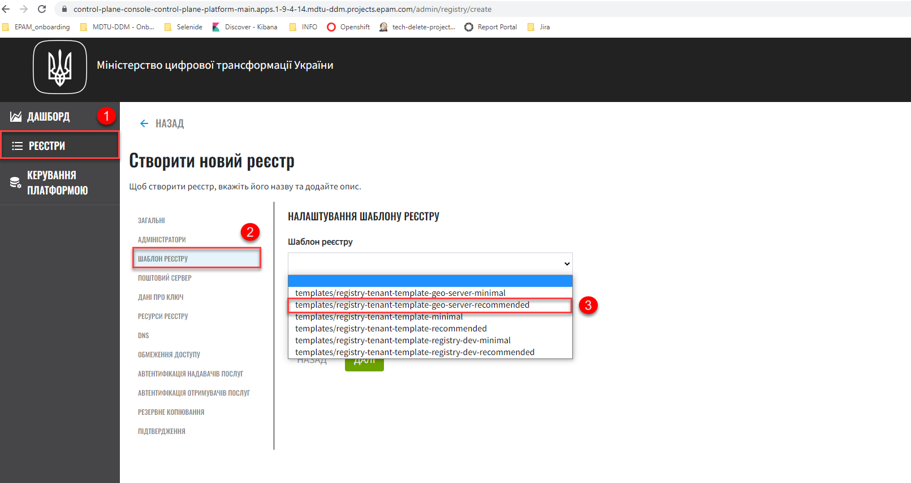
Після виконання та підтвердження усіх змін, запуститься Jenkins-процес
MASTER-Build-<назва-реєстру>, який розгорне реєстр із геосервером.Детальніше про розгортання реєстру — див. на сторінці Розгортання екземпляра реєстру.
3. Моделювання регламенту для використання геопросторових даних у бізнес-процесах
3.1. Створення моделі даних реєстру
Після розгортання реєстру, ви зможете створити дата-модель та використовувати геопросторові дані у регламенті.
Найперше необхідно створити модель даних. Для використання геопросторових даних у реєстрі імплементовано спеціальний атрибут type="geometry", який розширює можливості стандартної бібліотеки Liquibase.
Такий параметр можна використовувати на рівні колонок як при побудові таблиць, так і критеріїв пошуку (таблиць-представлень).
|
<changeSet id="table geometry type" author="registry owner">
<createTable tableName="entity_with_geo_type" ext:historyFlag="true" remarks="Сутність з геотипом">
<column name="entity_id" type="UUID" defaultValueComputed="uuid_generate_v4()">
<constraints nullable="false" primaryKey="true" primaryKeyName="pk_entity_id"/>
</column>
<column name="name" type="TEXT">
<constraints nullable="false"/>
</column>
<column name="address" type="TEXT">
<constraints nullable="false"/>
</column>
<column name="entity_location" type="geometry">
<constraints nullable="false"/>
</column>
</createTable>
</changeSet><changeSet author="registry owner" id="create SC get_entity_with_geo_type_not_equals">
<ext:createSearchCondition name="get_entity_with_geo_type_not_equals">
<ext:table name="entity_with_geo_type">
<ext:column name="entity_id"/>
<ext:column name="name" searchType="notEqual"/>
<ext:column name="address"/>
<ext:column name="entity_location"/>
</ext:table>
</ext:createSearchCondition>
</changeSet>Після застосування змін до майстер-гілки регламенту реєстру, запускається Jenkins-процес MASTER-Build-registry-regulations, який публікує структури, що містять тип "геометрія" (geometry), як шари до геосервера.
|
В результаті GeoServer міститиме опубліковані сутності Детальніше — див. у розділі Робота з GeoServer. |
|
При використанні ієрархічної моделі доступу, налаштуйте RLS-правила для таблиць та критеріїв пошуку. Докладніше — у розділі Застосування правил ієрархічної моделі при роботі з геоданими. |
3.2. Сценарії моделювання бізнес-процесів та форм
Після розгортання моделі даних реєстру та створення шарів даних (Layers) відповідно до дата-моделі, ви зможете записувати до, або зчитувати з БД об’єкти, які містять координати певних точок, ліній, або полігонів тощо.
3.2.1. Внесення координат до бази даних вручну
Вручну вносимо адресу та координати об’єкта (широту та довготу) у відповідні поля форми введення даних.
Використовуємо стандартний компонент Text Field при моделюванні форм.
Використовуємо Groovy-скрипти для отримання даних із форми та збереження даних до дата-фабрики.
3.2.1.1. Моделювання бізнес-процесу
Змоделюйте бізнес-процес, який дозволить вам внести дані з координатами об’єкта та зберегти їх до фабрики даних.
-
Змоделюйте користувацьку задачу (User Task) для введення даних та поєднайте її з відповідною UI-формою за параметром
Form key.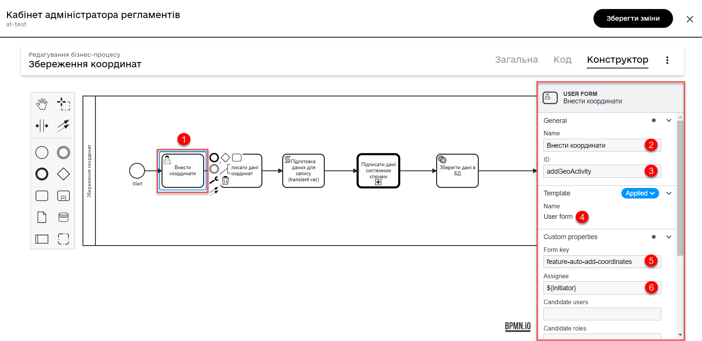
-
Змоделюйте користувацьку задачу (User Task) для підпису даних КЕП та поєднайте її з відповідною UI-формою за параметром
Form key.Передайте дані для підпису із попередньої форми через функцію
submission()у поліForm data pre-population. Наприклад:${submission('addGeoActivity').formData}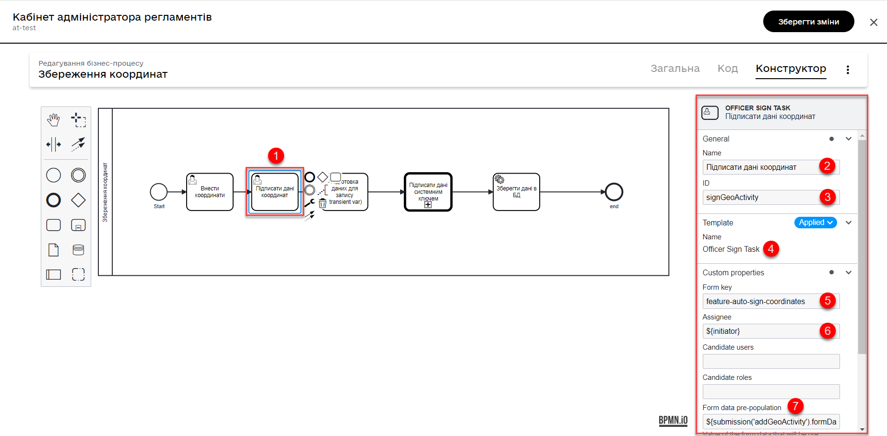
-
Змоделюйте скриптову задачу (Script Task) для отримання даних з UI-форми за відповідним ID, для подальшої обробки та збереження координат об’єкта до БД.
Скрипт отримання координат з UI-форми та створення об’єкта для збереження геоданих
def signedFormData = submission('signGeoActivity').formData def entityLocation = [:] entityLocation.type = 'point' entityLocation.latitude = signedFormData.prop('latitude').value() entityLocation.longitude = signedFormData.prop('longitude').value() signedFormData.prop('entityLocation', S(entityLocation, 'application/json')) signedFormData.deleteProp('latitude') signedFormData.deleteProp('longitude') set_transient_variable('payload', signedFormData)Цей скрипт об’єднує значення широти та довготи в один об’єкт із назвою
entityLocationі зберігає цей об’єкт уsignedFormData:-
Отримує дані форми (
formData) за допомогою функціїsubmission (), в якій передається ID форми підпису —'signGeoActivity', і зберігає їх у зміннуsignedFormData. -
Створює об’єкт (Map ключів-значень) із назвою
entityLocation.Параметр
entityLocationдорівнює назві колонкиentity_locationу базі данихregistryреєстру, яку ви визначили як таку, яка зберігатиме ваші геодані.Колонка створюється відповідно до вашої моделі даних з атрибутом
type="geometry".<column name="entity_location" type="geometry"> <constraints nullable="false"/> </column> -
Визначає тип
'point'(точка на мапі) дляentityLocation. -
Зберігає значення широти (
latitude) та довготи (longitude) ізsignedFormDataвentityLocation. -
Додає новий атрибут
'entityLocation'до signedFormData і передає JSON-представлення об’єктаentityLocationяк значення. -
Встановлює змінну
'payload'як тимчасову змінну, що зберігаєsignedFormData. Її можна надалі використовувати у бізнес-процесі.
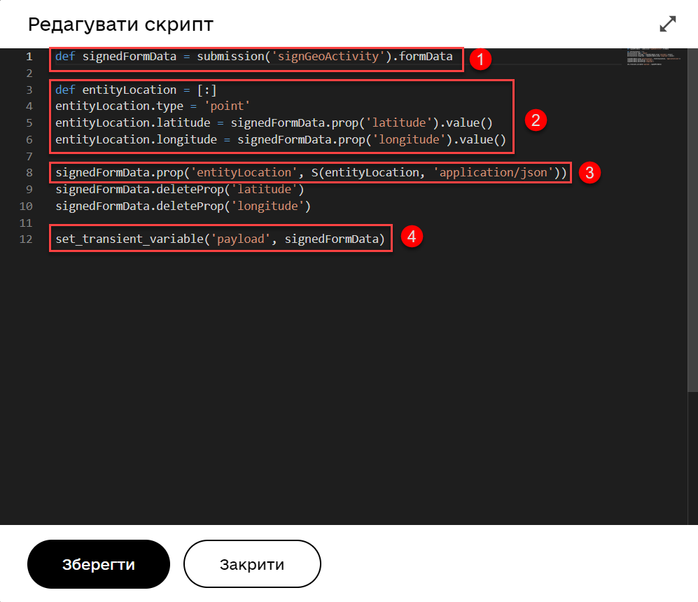
-
-
Змоделюйте сервісну задачу (Service Task) для підпису даних системним ключем.
- Налаштування:
-
-
Використовуйте делегат System signature by DSO service із каталогу шаблонів для накладання системного підпису.
-
Вхідні дані передайте як змінну
${payload}у відповідному полі. -
Передайте токен виконавця останньої користувацької задачі у бізнес-процесі:
${completer('signGeoActivity').accessToken}. -
Відповідь запишіть у змінну
system_signature_key.
-
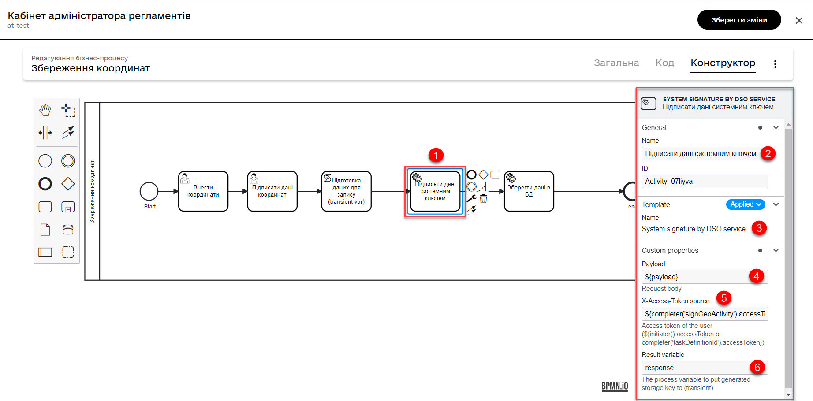
-
Збережіть дані до БД. Створіть новий запис у базі даних, зберігши значення об’єкта
entityLocationдо відповідної колонки.-
Використовуйте делегат Create entity in data factory, щоб створити сутність у базі даних.
-
Вкажіть ресурс/API-ендпоінт
entity-with-geo-type, що відповідає назві таблиці із геоданими, яку ви визначили при створенні моделі даних реєстру —entity_with_geo_type. -
Вхідні дані передайте як змінну
${payload}у відповідному полі. -
Передайте токен виконавця останньої користувацької задачі у бізнес-процесі:
${completer('signGeoActivity').accessToken}. -
Вкажіть джерело системного підпису. Для цього використовуйте функцію
sign_submission():
${sign_submission('signGeoActivity').signatureDocumentId}. -
Вкажіть як змінну
${system_signature_key}ключ Ceph-документа, який містить інформацію про підписані дані. -
Запишіть відповідь до результівної змінної, наприклад,
createGeoResponse.
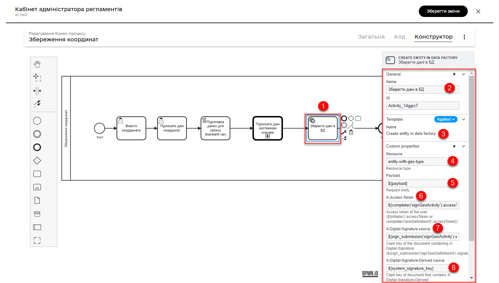
-
3.2.1.2. Моделювання UI-форм введення даних
Змоделюйте форми внесення даних до вашого бізнес-процесу. Службові назви форм мають відповідати значенню параметра Form key у відповідних користувацьких задачах бізнес-процесу.
-
Змоделюйте UI-форму для введення даних про об’єкт: назву, адресу та координати (широту та довготу).
-
Для усіх 4-х полів використовуйте компонент Text Field.
-
Для кожного поля визначте бізнес-назву (Вкладка
Display>Label) та назву параметра для API відповідно (ВкладкаAPI>Property Name).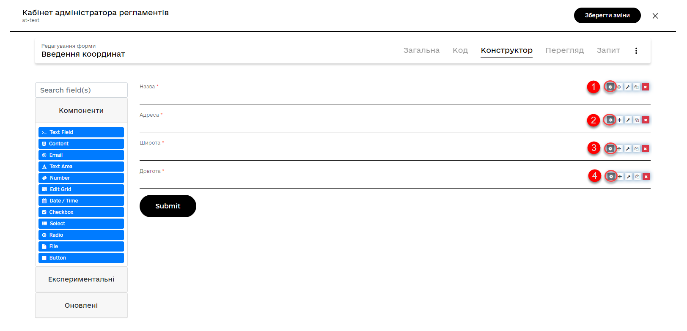
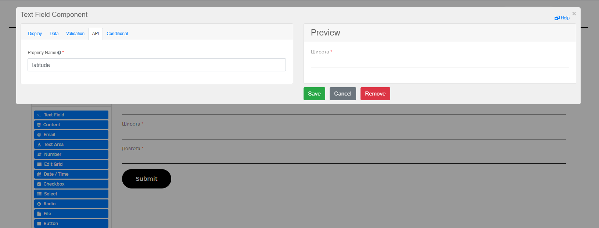
-
UI-форма у Кабінеті користувача може виглядати так:
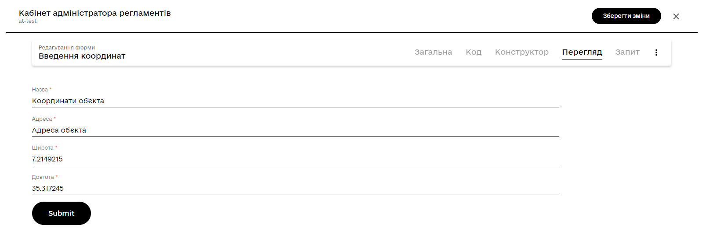
-
Параметри, що зберігатимуться до фабрики даних, матимуть наступний вигляд:
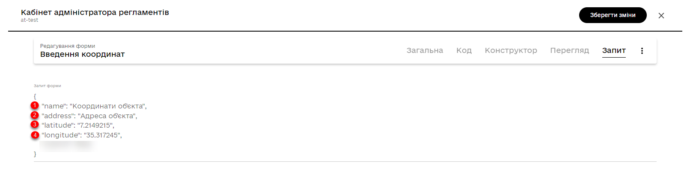
-
-
Змоделюйте UI-форму для підпису введених даних КЕП. Вона матиме однакові поля із формою введення даних. На цій формі користувач зможе лише перевірити правильність введених даних перед підписом.
3.2.2. Вибір координат на мапі та збереження їх до бази даних
Моделюємо UI-форму із компонентом Map (Мапа) для використання мапи у бізнес-процесі.
Використовуємо Groovy-скрипти для отримання даних із форми та збереження даних до дата-фабрики.
3.2.2.1. Моделювання бізнес-процесу
Змоделюйте бізнес-процес, який дозволить вам обрати координати об’єкта (точка, лінія, або полігон) на мапі та зберегти їх до фабрики даних.
-
Змоделюйте користувацьку задачу (User Task) для вибору координат на мапі та поєднайте її з відповідною UI-формою за параметром
Form key.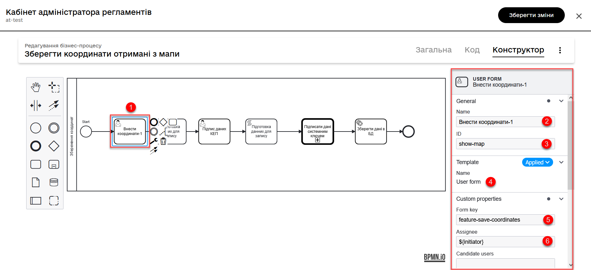
-
Змоделюйте скриптову задачу (Script Task) для отримання даних з UI-форми із мапою за відповідним ID, для подальшої обробки та збереження координат об’єкта до БД.
Скрипт отримання координат з мапи та створення об’єкта для збереження геоданих
def formDataForm = submission('show-map').formData def data = S([:], 'application/json') data.prop("name", formDataForm.prop("name")) data.prop("address", formDataForm.prop("address")) data.prop("entityLocation", formDataForm.prop('entityLocation').prop('geometry').toString()) println "data: " + data execution.removeVariable('payload') set_transient_variable('payload', data)Загалом, цей скрипт отримує дані з форми, створює новий JSON-об’єкт з отриманими даними та записує його до тимчасової змінної
'payload':-
Він створює змінну
formDataFormі отримує дані форми з ідентифікатором'show-map'за допомогою JUEL-функціїsubmission(). -
Створює новий JSON-об’єкт
dataз порожнім словником та типом даних'application/json'. -
Заповнює об’єкт
dataвластивостями"name","address"та"entityLocation", витягуючи відповідні значення з об’єктаformDataForm.Зверніть увагу, що у властивості "entityLocation"вкладений об’єкт'geometry'перетворюється в рядок. -
Встановлює нову змінну
'payload', використовуючи значення об’єктаdata, яку можна надалі використати у бізнес-процесі.
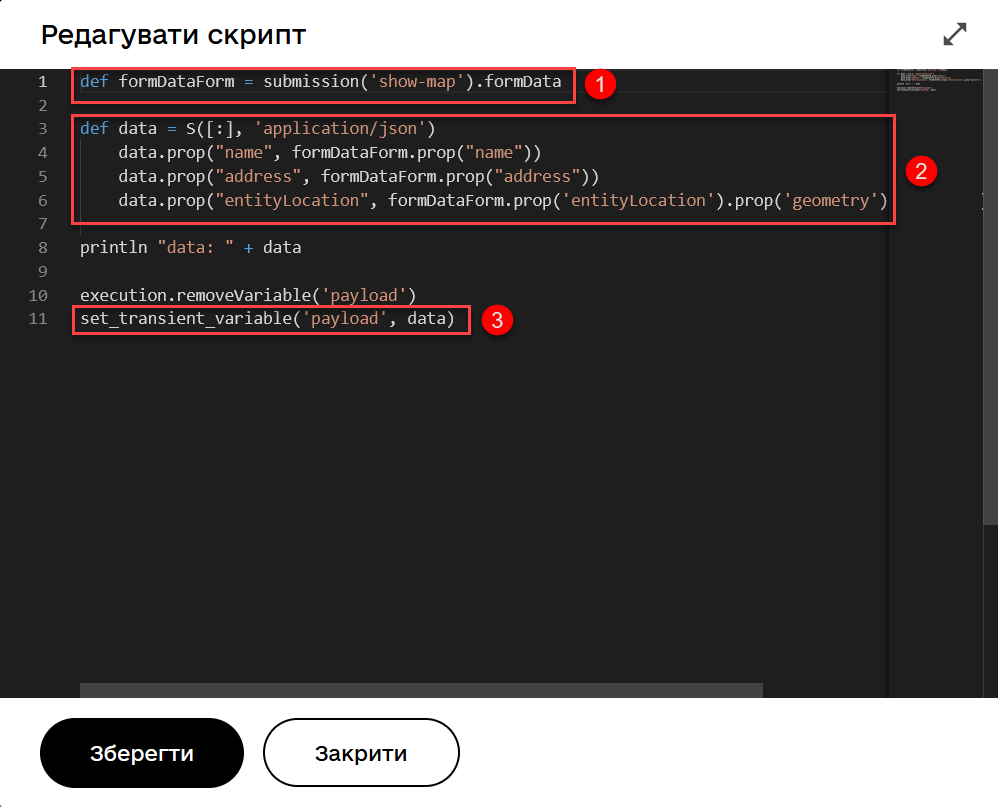
-
-
Змоделюйте користувацьку задачу (User Task) для підпису даних КЕП та поєднайте її з відповідною UI-формою за параметром
Form key.Передайте дані для підпису як змінну
${payload}у поліForm data pre-population.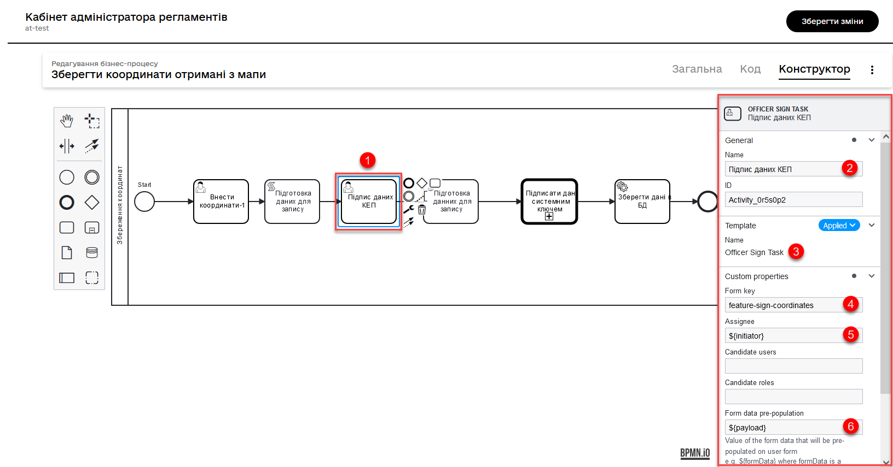
-
Змоделюйте скриптову задачу для обробки та збереження підписаних даних. Скрипт тут використовується майже ідентичний до попереднього, з єдиною відмінністю, що у властивості
"entityLocation"вкладений об’єкт'geometry'не перетворюється в рядок і передається JSON-об’єктом.Скрипт для обробки та запису даних, підписаних КЕП
def formDataForm = submission('show-map').formData def data = S([:], 'application/json') data.prop("name", formDataForm.prop("name")) data.prop("address", formDataForm.prop("address")) data.prop("entityLocation", formDataForm.prop('entityLocation').prop('geometry')) println "data: " + data execution.removeVariable('payload') set_transient_variable('payload', data) -
Змоделюйте сервісну задачу (Service Task) для підпису даних системним ключем.
-
Використовуйте делегат System signature by DSO service із каталогу шаблонів для накладання системного підпису.
-
Вхідні дані передайте як змінну
${payload}у відповідному полі. -
Передайте токен виконавця останньої користувацької задачі у бізнес-процесі:
${completer('signGeoActivity').accessToken}. -
Відповідь запишіть у змінну
system_signature_key.
-
-
Збережіть дані до БД. Створіть новий запис у базі даних, зберігши значення об’єкта
entityLocationдо відповідної колонки.-
Використовуйте делегат Create entity in data factory, щоб створити сутність у базі даних.
-
Вкажіть ресурс/API-ендпоінт
entity-with-geo-type, що відповідає назві таблиці із геоданими, яку ви визначили при створенні моделі даних реєстру —entity_with_geo_type. -
Вхідні дані передайте як змінну
${payload}у відповідному полі. -
Передайте токен виконавця останньої користувацької задачі у бізнес-процесі:
${completer('ID задачі для підпису даних КЕП').accessToken}. -
Вкажіть джерело системного підпису. Для цього використовуйте функцію
sign_submission():
${sign_submission('ID задачі для підпису даних КЕП').signatureDocumentId}. -
Вкажіть як змінну
${system_signature_key}ключ Ceph-документа, який містить інформацію про підписані дані. -
Запишіть відповідь до результівної змінної, наприклад,
createGeoResponse.
-
3.2.2.2. Моделювання UI-форм введення даних
Змоделюйте UI-форми введення даних. На відміну від попереднього випадку, коли ми вносимо координати вручну, тепер розглянемо можливість вносити координати об’єкта прямо з мапи до БД.
-
Змоделюйте форму для вибору координат на карті за допомогою компонента
MAP("Мапа").-
Визначте
Label, наприклад,entityLocation. -
Виконайте налаштування на вкладці Data.
-
Перейдіть на вкладку API та визначте
Property NameякentityLocation. Цей параметр використовується для обміну даними через API.Детальніше — див. на сторінці Компонент Map
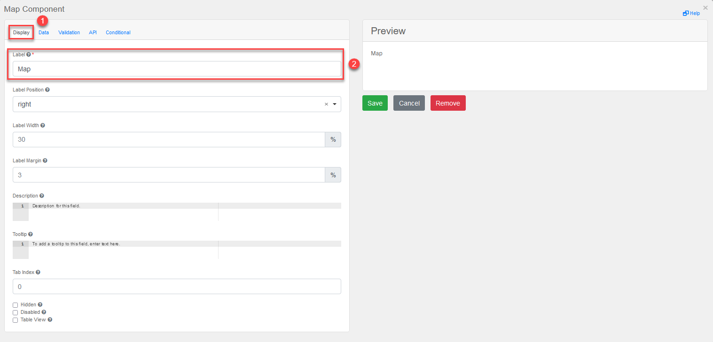
-
-
Створіть форму для підпису даних КЕП. Змоделюйте 3 текстових поля для даних, які після цифрового підпису будуть збережені до БД:
-
address— адреса об’єкта; -
name— назва об’єкта; -
entityLocation— координати об’єкта (точка на мапі, лінія, або полігон).
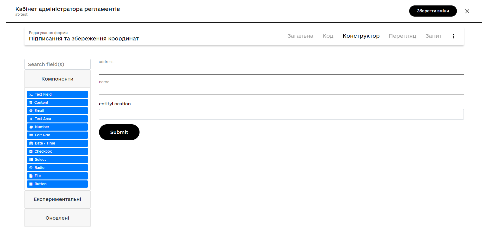
-
3.2.3. Зміна координат та інформації про них
Ви можете змінювати внесені раніше координати. Для цього просто запустіть відповідний бізнес-процес, оберіть певний географічний об’єкт на мапі (точка, лінія чи полігон), який необхідно змінити, далі оберіть новий об’єкт та перезапишіть значення до БД.
3.2.3.1. Моделювання бізнес-процесу
-
Змоделюйте користувацьку задачу (User Task) для вибору координат на мапі, які необхідно змінити, та поєднайте її з відповідною UI-формою за ключем
Form key(службова назва форми).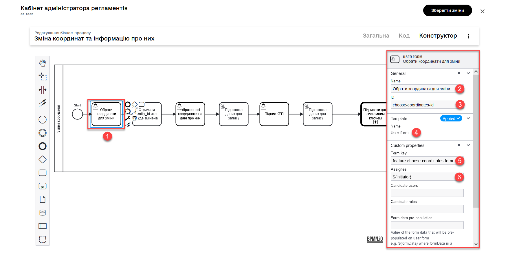
-
За допомогою скрипту отримайте ідентифікатор сутності у БД (
entityId), яку необхідно змінити.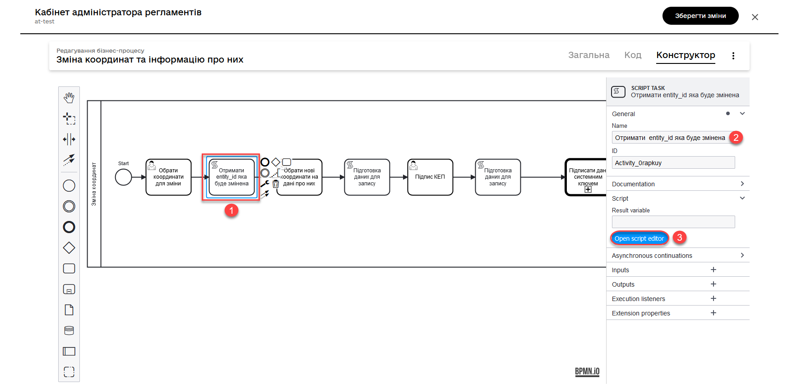
Скрипт для отримання даних з форми, включно з entityId сутності
def formDataForm = submission('choose-coordinates-id').formData println "formDataForm: " + formDataForm def data = S([:], 'application/json') data.prop("entityId", formDataForm.prop('map').prop('properties').prop("id").value()) data.prop("name", formDataForm.prop('map').prop('properties').prop("name").value()) data.prop("address", formDataForm.prop('map').prop('properties').prop("address").value()) execution.removeVariable('payload') set_transient_variable('payload', data)Цей скрипт виконує такі дії:
-
Він визначає змінну
formDataForm, яка отримує дані з форми, що була відправлена з ідентифікатором'choose-coordinates-id'за допомогою JUEL-функціїsubmission(). -
Створює новий об’єкт
dataз порожнього словника та типом даних'application/json'. -
Заповнює об’єкт
dataданими з formDataForm, такими як:entityId,nameтаaddress. -
Встановлює змінну
'payload'як тимчасову змінну і надає їй значення data.
-
-
Далі створіть користувацьку задачу (User Task) для вибору нових координат на мапі та поєднайте її з відповідною UI-формою за ключем
Form key(службова назва форми).Дані зі скрипту на форму передайте як змінну
${payload}у поліForm data pre-population.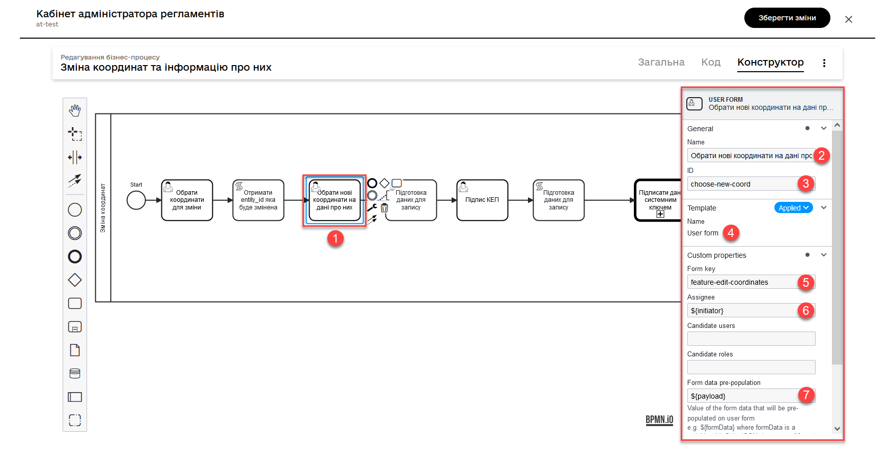
-
За допомогою скрипту отримайте оновлені дані сутності, які необхідно записати до БД.
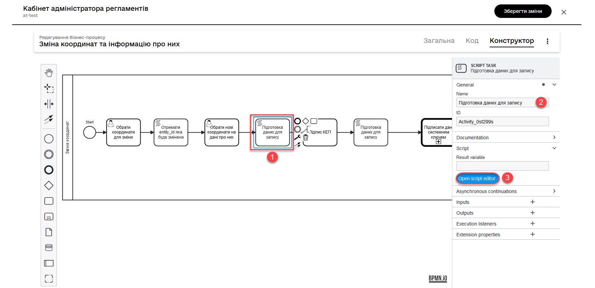
Скрипт для отримання оновлених даних та координат з форми
def formDataForm = submission('ID користувацької задачі для вибору нових координат').formData println "formDataForm: " + formDataForm def data = S([:], 'application/json') data.prop("entityId", formDataForm.prop('map').prop('properties').prop("id").value()) data.prop("name", formDataForm.prop('map').prop('properties').prop("name").value()) data.prop("address", formDataForm.prop('map').prop('properties').prop("address").value()) execution.removeVariable('payload') set_transient_variable('payload', data)Цей скрипт виконує такі дії:
-
Він визначає змінну
formDataForm, яка отримує дані з форми, що була відправлена з ідентифікатором'choose-coordinates-id'за допомогою JUEL-функціїsubmission(). -
Створює новий об’єкт
dataз порожнього словника та типом даних'application/json'. -
Заповнює об’єкт
dataданими з formDataForm, такими як:entityId,nameтаaddress. -
Встановлює змінну
'payload'як тимчасову змінну і надає їй значення data.
-
-
Далі створіть користувацьку задачу (User Task) для підпису даних КЕП та поєднайте її з відповідною UI-формою за ключем
Form key(службова назва форми).Дані зі скрипту на форму підпису передайте як змінну
${payload}у поліForm data pre-population.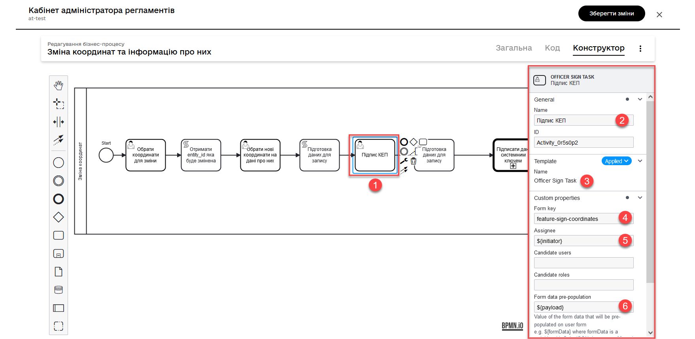
-
За допомогою скрипту отримайте підписані КЕП дані, які необхідно записати БД.
Скрипт для отримання підписаних даних з форми
def formDataForm = submission('choose-new-coord').formData println "formDataForm choose-new-coord " + formDataForm def data = S([:], 'application/json') data.prop("entityId", formDataForm.prop("entityId")) data.prop("name", formDataForm.prop("name")) data.prop("address", formDataForm.prop("address")) data.prop("entityLocation", formDataForm.prop('entityLocation').prop('geometry')) execution.removeVariable('payload') set_transient_variable('payload', data) println "payloadData: " + data-
Він визначає змінну
formDataForm, яка отримує дані з форми, що була відправлена з ідентифікатором'choose-coordinates-id'за допомогою JUEL-функціїsubmission(). -
Створює новий об’єкт
dataз порожнього словника та типом даних'application/json'. -
Заповнює об’єкт
dataданими з formDataForm, такими як:entityId,nameтаaddress. -
Встановлює змінну
'payload'як тимчасову змінну і надає їй значення data.
Цей скрипт схожий на попередній, але з однією невеликою відмінністю: він не викликає метод
toString()для властивості'geometry' об’єкта'entityLocation'. Таким чином, значення'entityLocation'залишається у своєму вихідному форматі (об’єкт) замість рядка. -
-
Змоделюйте сервісну задачу (Service Task) для підпису даних системним ключем.
-
Використовуйте делегат System signature by DSO service із каталогу шаблонів для накладання системного підпису.
-
Вхідні дані передайте як змінну
${payload}у відповідному полі. -
Передайте токен виконавця останньої користувацької задачі у бізнес-процесі:
${completer('ID останньої користувацької задачі для підпису даних').accessToken}. -
Відповідь запишіть у змінну
system_signature_key.
-
-
Оновіть сутність у базі даних.
Використовуйте для цього делегат Update entity in data factory, або загальний конектор Connect to data factory із методом
PUT.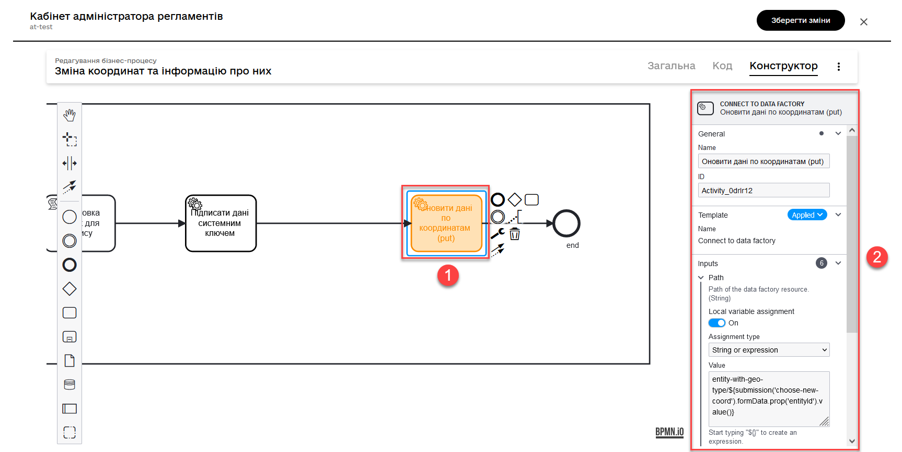
Наприклад, передайте значення ресурсу та ідентифікатор сутності наступним чином, через функцію submission:
entity-with-geo-type/${submission('ID користувацької задачі для вибору нових координат').formData.prop('entityId').value()}-
entity-with-geo-type— ресурс/ендпоінт, що відповідає таблиціentity_with_geo_typeу БД. -
entityId— ідентифікатор сутності, яку необхідно оновити, отриманий з відповідної форми.
Детальніше — див. на сторінці Каталог типових розширень до бізнес-процесів.
-
3.2.3.2. Моделювання форм введення даних
-
Змоделюйте форму для вибору координат на карті за допомогою компонента
MAP("Мапа").-
Визначте
Label, наприклад,Map. -
Виконайте налаштування на вкладці Data.
-
Перейдіть на вкладку API та визначте
Property Nameякmap. Цей параметр використовується для обміну даними через API.Детальніше — див. на сторінці Компонент Map
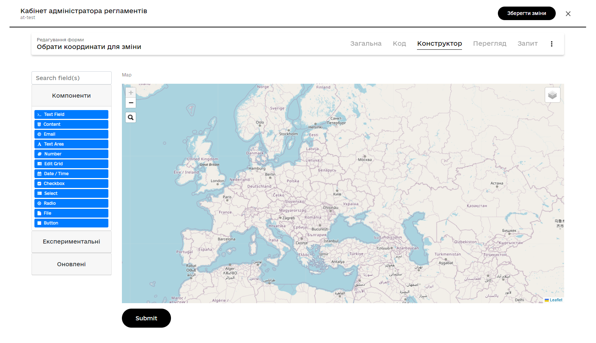
-
-
Далі змоделюйте ще одну форму для оновлення координат та інформації про об’єкт. Для цього використовуйте компоненти Text Field для текстових полів та компонент
MAP(Мапа) для вибору нових координат на карті.-
Визначте
Label, наприклад,entityLocation. -
Виконайте налаштування на вкладці Data.
-
Перейдіть на вкладку API та визначте
Property NameякentityLocation. Цей параметр використовується для обміну даними через API.Детальніше про компонент MAP— див. на сторінці Компонент Map
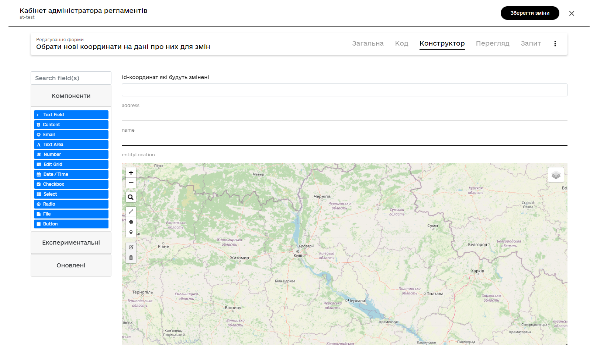
-
-
Створіть форму для підпису даних КЕП. Змоделюйте 3 поля текстових поля для даних, які після цифрового підпису будуть збережені до БД:
-
address— адреса об’єкта; -
name— назва об’єкта; -
entityLocation— координати об’єкта (точка на мапі, лінія, або полігон).
-
3.2.4. Пошук географічних об’єктів на мапі з функцією геокодування
Користувачі мають змогу переглядати усі географічні об’єкти на мапі, які є записаними до бази даних, а також шукати такі об’єкти за допомогою геокодування.
3.2.4.1. Моделювання бізнес-процесу
Для відображення мапи з координатами усіх доступних об’єктів достатньо змоделювати простий процес зі стартовою формою.
Поєднайте стартову задачу із формою введення даних за ключем Form key.
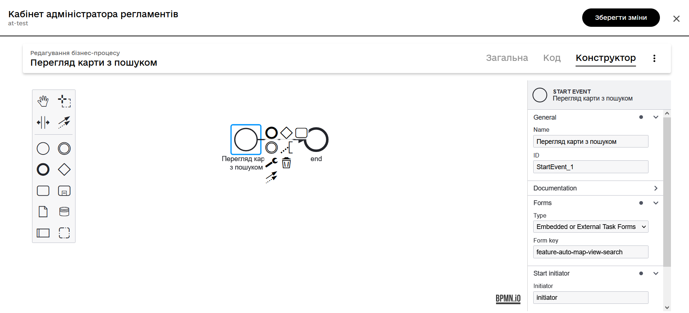
3.2.4.2. Моделювання форми пошуку об’єктів
Візуалізувати геодані на UI-формах Кабінетів користувача можна завдяки компоненту FormIO «Мапа» (Map). Цей компонент надає повну функціональність по роботі із геопросторовими даними у реєстрі.
Геокодування (пошук географічних об’єктів) активується безпосередньо на UI-формах, у налаштуваннях компонента Map.
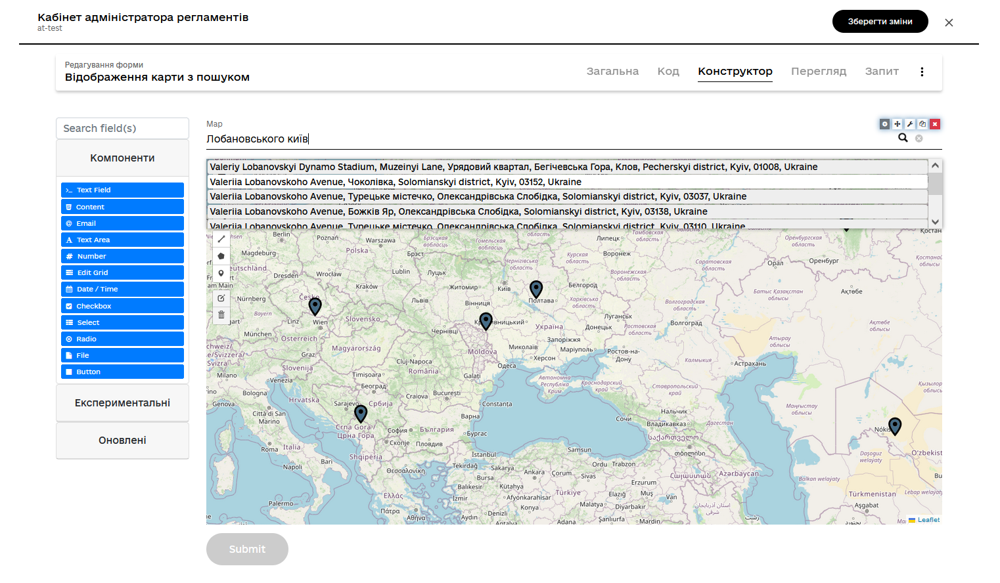
Детальніше про компонент MAP — див. на сторінці Компонент Map.
|
3.3. Робота з геоданими у Кабінетах користувачів
Користувачі можуть використовувати попередньо змодельовані бізнес-процеси для роботи із мапою та геоданими у реєстрі.
Для цього достатньо перейти в особистий кабінет, знайти розділ Доступні послуги та запустити один із наявних процесів (наприклад, внесення координат об’єкта до бази даних тощо).
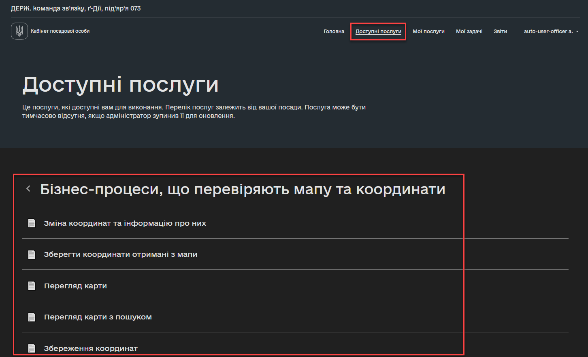
4. Робота з GeoServer
GeoServer — сервіс, який дозволяє отримувати дані з БД у вигляді GeoJSON для їх подальшої обробки та відображення на мапі у бізнес-процесах.
Усі структури даних регламенту, які містять тип "геометрія" (geometry), публікуються як шари (Layers) до геосервера.
Конфігурація публікується на етапі розгортання регламенту, на кроці publish-geoserver-configuration основного Jenkins-процесу MASTER-Build-registry-regulations.
| Для керування налаштуваннями геосервера передбачений вебінтерфейс, який можна знайти за посиланням у середовищі вашого реєстру: https://geo-server-<назва-реєстру>.apps.envone.dev.registry.eua.gov.ua/geoserver. |
Перегляд шарів у геосервері
Шар (Layer) — це колекція об’єктів (Features).
Feature — це окремий об’єкт на мапі, який містить геометричні та атрибутивні дані.
Об’єкти можуть бути:
-
точками (
"type": "Point"); -
лініями (
"type": "Polyline"); -
полігонами (
"type": "Polygon").
Вони представляють різні елементи на земній поверхні, такі як будівлі, річки, озера, дороги тощо. Кожен об’єкт feature містить геометрію, яка вказує на його розміщення у просторі (наприклад, entityLocation), та властивості, які містять додаткову інформацію про об’єкт (наприклад, name та address).
У контексті роботи із геосервером реєстру, опублікований там шар (layer) є або таблицею, або представленням (Search Condition).
Для того, щоб переглянути усі шари, які публікуються до геосервера, виконайте наступні кроки:
-
Увійдіть до геосервера як адміністратор.
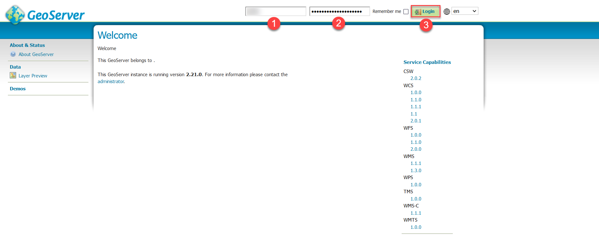
-
Відкрийте розділ Layer Preview.
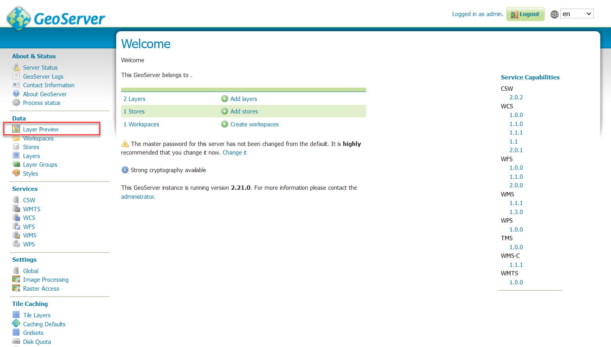
Ви побачите усі шари (таблиці або представлення із вашої бази даних
registry), які містять типgeometry. -
Навпроти відповідного шару виберіть у випадному списку формат перегляду даних —
GeoJSON.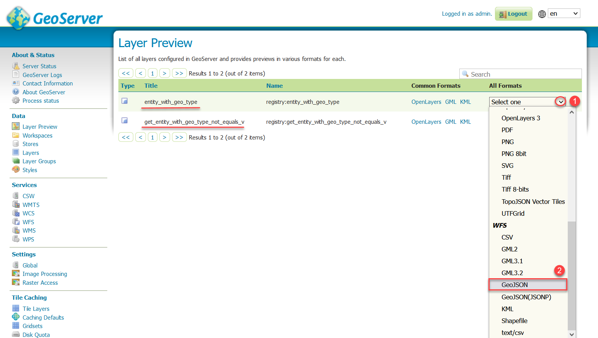
В результаті ви побачите величезний об’єкт типу
FeatureCollectionіз набором геометричних (координати) та атрибутивних (назва об’єкта на мапі, адреса тощо) даних.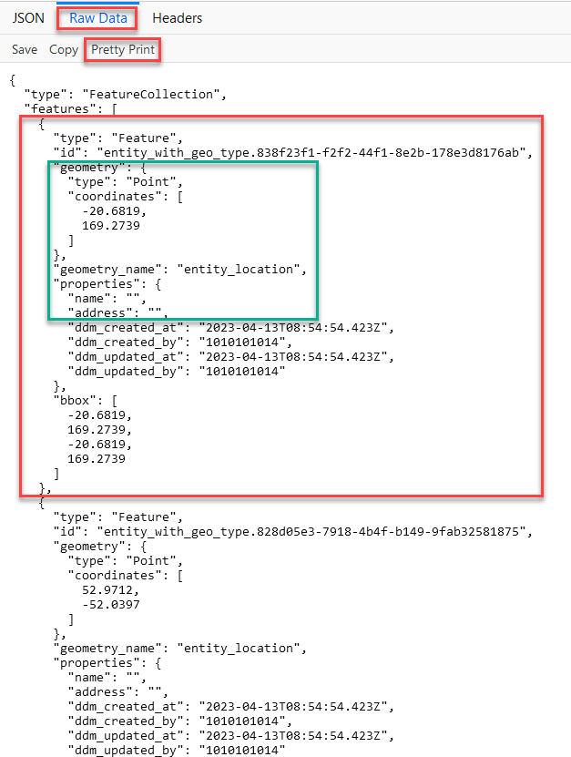
5. Робота з таблицями у базі даних реєстру
Геопросторові дані зберігаються у спеціалізованій таблиці бази даних реєстру, яку ви визначаєте як сховище для цих даних. Саме геометричні елементи (координати точок, ліній та полігонів) зберігаються у відведеній для них колонці, що підтримує тип даних geometry, відповідно до вашої дата-моделі (див. детальніше розділ Створення моделі даних реєстру).
6. Робота з API
Інформацію за усіма features-об’єктами (геометрія та атрибути) по кожному з шарів (layers) можна отримати напряму з API реєстру, у сервісі registry-rest-api.
Відповідні точки доступу будуть створені автоматично, на основі вказаних у моделі даних таблиць та критеріїв пошуку. Наприклад, entity-with-geo-type тощо.
|
Усі згенеровані API-ендпоінти відповідного реєстру представлені в openapi-специфікації та доступні за посиланням: https://registry-rest-api-<назва-реєстру>.apps.envone.dev.registry.eua.gov.ua/openapi. Обов’язково додавайте |
7. Застосування правил ієрархічної моделі при роботі з геоданими
7.1. Загальний опис
Користувачі Платформи можуть доступатись до геоданих у реєстрі з урахуванням RLS-правил (Row-Level Security) та ієрархічних обмежень. При використанні правил ієрархічної моделі, користувачі матимуть доступ лише до географічних об’єктів того рівня ієрархії, який визначений JWT-атрибутом у токені доступу користувача.
| RLS-правила та ієрархічна модель — це додаткові опції доступу до геоданих. Їх застосування не є обов’язковим. Ви можете використовувати базову модель доступу. |
- Основні принципи та положення:
-
-
RLS-фільтрація та доступ до геоданих: Геомодуль надає доступ до даних реєстру, враховуючи обмеження, встановлені RLS-правилами читання регламенту.
-
Конфігурація фільтрації: система автоматично налаштовує правила фільтрації на основі RLS-метаданих. Коли користувач робить запит до шару геоданих, система автоматично включає відповідний RLS-фільтр, заснований на атрибутах користувача. Атрибути передаються у JWT-токені.
-
Публікація регламенту: якщо реєстр розгорнуто із геомодулем, то під час публікації регламенту система автоматично генерує та застосовує необхідні RLS-правила для геомодуля. Якщо обмежень RLS немає, система автоматично видаляє будь-які наявні правила.
-
|
Детальніше про ієрархічну модель доступу до даних та налаштування RLS-правил читайте на сторінці Ієрархічна модель. |
7.2. Моделювання доступу та застосування RLS-правил
Створення моделі даних реєстру із додаванням RLS-правил подібне до стандартного Створення моделі даних реєстру, лише потрібно додати changeset із RLS-правилом:
-
Створіть таблицю із типом
geometry.Приклад. Моделювання таблиці із типом geometry
<changeSet id="table geometry type" author="registry owner"> <createTable tableName="entity_with_geo_type" ext:historyFlag="true" remarks="Сутність з геотипом"> <column name="entity_id" type="UUID" defaultValueComputed="uuid_generate_v4()"> <constraints nullable="false" primaryKey="true" primaryKeyName="pk_entity_id"/> </column> <column name="entity_name" type="TEXT"> <constraints nullable="false"/> </column> <column name="address" type="TEXT"> <constraints nullable="false"/> </column> <column name="entity_location" type="geometry"> <constraints nullable="false"/> </column> <column name="hierarchy_code" type="TEXT"> <constraints nullable="false"/> </column> </createTable> </changeSet> -
Створіть таблицю-представлення
Моделювання таблиці-представлення (Search Condition) із типом geometry
<changeSet author="registry owner" id="create SC get_entity_with_geo_type_starts_with"> <ext:createSearchCondition name="get_entity_with_geo_type_starts_with"> <ext:table name="entity_with_geo_type"> <ext:column name="entity_id"/> <ext:column name="entity_name"/> <ext:column name="hierarchy_code" searchType="startsWith"/> <ext:column name="address"/> <ext:column name="entity_location"/> </ext:table> </ext:createSearchCondition> </changeSet> -
Додайте правило до таблиці або представлення
Додавання RLS-правила на читання геоданих із таблиці-представлення
<changeSet id="entity_with_geo_type_rls" author="registry owner"> <ext:rls name="entity_with_geo_type_read_rls"> <ext:addReadRule name="entity_with_geo_type_read_rule" jwtAttribute="hierarchy_code" checkColumn="hierarchy_code" checkTable="get_entity_with_geo_type_starts_with_v"/> </ext:rls> </changeSet>Атрибут
hierarchy_codeє сурогатним ключем для контролю ієрархічного доступу. Взяте з Keycloak, значенняhierarchy_codeвключається до JWT-токена користувача.Завдяки цьому RLS-правилу, користувач побачить на мапі лише ті геопросторові об’єкти з колонки
entity_location, до яких у нього є права на основіhierarchy_code.